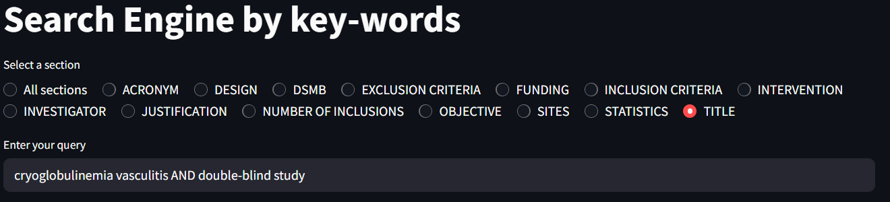
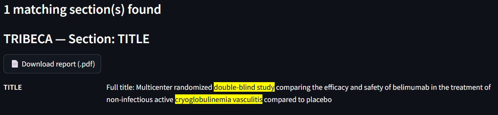

Key-Words
Query
The exact search engine supports logical operators and wildcards to refine your search:
- Simple multi-word queries – if you enter multiple words without operators, they must appear exactly as typed and consecutively.
- AND – all terms connected with
ANDmust appear at least once in the section for it to match. - OR – at least one of the terms connected with
ORmust appear for a match. - Wildcard (
*) – placing an asterisk at the end of a word allows matching any term starting with that prefix. For example,intervent*will matchintervention,interventions, orinterventive. - Brackets (
()) – currently not implemented.
These operators allow more flexible and precise querying of the protocol sections.
Example: cryoglobulinemia vasculitis AND double-blind study
Sections
As shown, you can select a single section or all sections. Selecting multiple individual sections at once is not supported yet.

Display
The results are displayed as:
- Number of studies – shows how many protocols or sections (if all sections are selected) match your query.
- List of studies or sections – with the occurrences of your query terms highlighted.
- Downloadable PDFs – download the protocol in PDF format.
